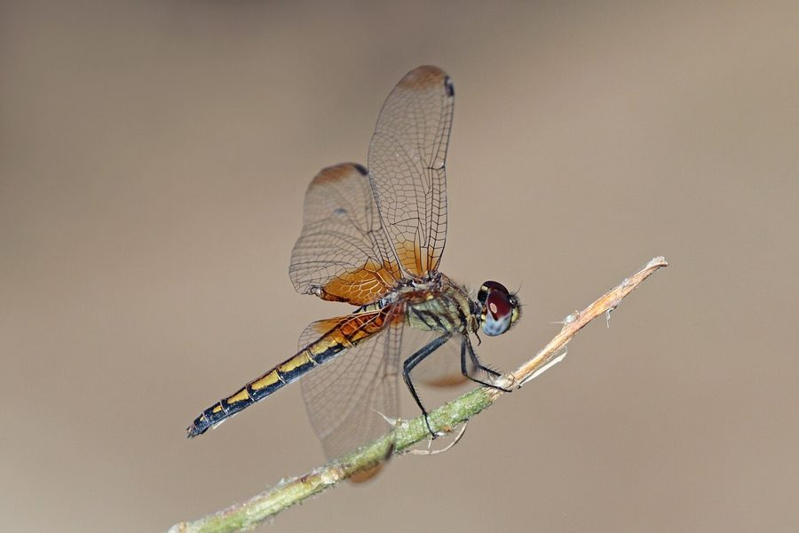

लाल व्याधपतंगCrimson Marsh Glider
Trithemis aurora · Libellulidae · INS-0015

- Scientific name
- Trithemis aurora (Burmeister, 1839)
- Family
- Libellulidae
- Hindi
- लाल व्याधपतंग
- Status here
- native
- IUCN
- LC
When to look कब देखें
Present all year.
लाल व्याधपतंग / Crimson Marsh Glider
Trithemis aurora (Burmeister, 1839) — Libellulidae
लाल व्याधपतंग — हमारे तालाबों, नहरों और धान के खेतों के पास उड़ने वाली एक अत्यंत सुंदर और चमकीले लाल रंग की व्याधपतंग (dragonfly) है। इसके वयस्क नर का शरीर चमकीले लाल-बैंगनी रंग का होता है, और इसके पंखों के आधार पर गहरे लाल रंग के धब्बे होते हैं, जबकि मादा का रंग फीका पीला-भूरा होता है। यह अक्सर तालाब के किनारे खड़ी सूखी टहनियों या घास के तिनकों पर बैठती है और वहां से उड़कर हवा में छोटे कीड़ों का शिकार करती है। इसका जलीय लार्वा पानी के नीचे रहकर मच्छरों के लार्वा का भारी मात्रा में भक्षण करता है, जिससे मच्छरों के नियंत्रण में मदद मिलती है।
Quick Identification त्वरित पहचान
| Feature | Description |
|---|---|
| Size | Medium-sized dragonfly (body length 32–38 mm; wingspan 50–60 mm) |
| Male Colour | Brilliant crimson-red to purplish abdomen; red veins on wings; purplish-red eyes |
| Female Colour | Dull olive-brown to yellow body; clear wings with brown veins; brown eyes |
| Wings | Clear wings with a reddish-brown or amber patch at the wing base (especially on hindwings) |
| Behaviour | Perches frequently on exposed twigs and grass stems; actively defends territories over water |
Field tip: Look for a medium-sized, striking crimson-red insect perching on sticks near water. Unlike the larger Scarlet Skimmer, it has a noticeably pinkish or purplish sheen on its abdomen and reddish wing veins.
Morphology आकारिकी
Biometrics (typical measurements in the northern Indian plains):
| Measurement | Range |
|---|---|
| Body length | 32–38 mm |
| Hindwing length | 24–28 mm |
| Wing span | 50–60 mm |
Adult description: The adult male has a brilliant crimson-red or purplish-red face and eyes. The thorax is covered with fine purple pruinescence. The abdomen is bright crimson-red, slightly swollen at the base and tapering towards the end. The wings are transparent with red venation, showing a prominent reddish-brown or amber-colored patch at the base. Females and teneral (newly emerged) males are olive-brown or yellowish with black markings on the abdomen.
Vocalisations
Odonates do not possess vocal organs and cannot produce true vocalisations.
- Sound production: Wing-whirring sounds are produced by rapid wingbeats during territorial disputes, pursuit of prey, or courtship maneuvers. The wing-beat frequency is approximately 30–35 Hz.
Behaviour & Ecology व्यवहार और पारिस्थितिकी
As a water quality indicator, Trithemis aurora is classified as a pollution-tolerant generalist. While its presence does not signify pristine water quality, it indicates a functioning wetland food web. They forage by darting from a perch to catch insects in flight and returning to the same spot. Males are highly territorial and engage in swift aerial chases over open water.
Larval (Naiad) Stage
The larval stage (naiad) is entirely aquatic, living at the bottom of ponds and slow-moving streams.
- Body form and breathing: The naiad has a squat, robust body covered in silt-retaining hairs for camouflage. It breathes through internal rectal tracheal gills, pumping water in and out of the abdomen, which also allows for rapid jet-propulsion when threatened.
- Habitat and duration: They inhabit submerged mud, decaying leaf litter, and root masses in slow-moving water. The larval stage lasts for approximately 7–9 weeks.
- Emergence: Upon maturity, the naiad climbs up aquatic vegetation or stones at night, splits its larval skin, and emerges as an adult, drying its wings before taking flight at sunrise.
Life Cycle / Phenology जीवन चक्र
- Egg: Laid directly onto the water surface by the female tapping her abdomen on the water while in flight, often guarded by the male.
- Larva: Develops rapidly in warm, nutrient-rich water.
- Emergence: Peak emergence occurs from July to September during the wet season.
- Adult lifespan: Approximately 4–6 weeks.
- Seasonality: Present year-round in eastern UP, but highly active during the monsoon and post-monsoon months.
Host Plants or Prey आहार
Prey (adults):
- Mosquitoes (Anopheles and Culex spp.)
- Midges and small gnats
- Flying termites and ants
Prey (larvae):
- Mosquito larvae
- Small water invertebrates (Daphnia, cyclops)
- Small tadpoles and fish fry
Predators / Natural Enemies शत्रु
- Birds: Swallows, Green Bee-eaters (Merops orientalis), and drongos.
- Spiders: Large orb-weavers that spin webs near pond margins.
- Other Odonates: Larger dragonflies such as the Wandering Glider.
Agricultural / Human Relevance कृषि प्रासंगिकता
Natural pest suppressor. By consuming mosquito larvae in their aquatic phase and adult mosquitoes in their flying phase, they help suppress vector-borne diseases near village settlements. They are compatible with organic rice farming, as they populate flooded fields and control crop-damaging insects.
Expected Locally स्थानीय रूप से अपेक्षित
Not a field record. Written from published accounts for eastern Uttar Pradesh. No confirmed local sighting yet — if you have seen it, that is what the atlas needs.
अभी तक स्थानीय पुष्टि नहीं। यह विवरण प्रकाशित स्रोतों से है, किसी अवलोकन से नहीं।
Abundant in the Basti district and along the Ghaghra river floodplain. Large numbers can be seen perching on reeds along irrigation canals and village ponds (talab). They tolerate moderate water pollution, making them common in semi-urban drains and village pools. Their vivid red color makes them popular among local children.
Distribution वितरण
Global range: Widespread across South and East Asia, from Pakistan, India, Nepal, Sri Lanka, and Bangladesh to China, Japan, the Philippines, and Indonesia.
In India: Found throughout the plains and lower hills.
In Uttar Pradesh: A common resident state-wide.
In Basti district / eastern UP: Abundant in all wetland, riverine, and canal networks.
Research Questions शोध प्रश्न
Anyone can investigate these | कोई भी इन प्रश्नों की जाँच कर सकता है
- Which perch heights are most preferred by males when defending their territories over ponds? — Measure and compare perch heights on reeds.
- How does water flow speed affect the density of Crimson Marsh Glider larvae? / पानी के बहने की गति लाल व्याधपतंग के लार्वा की संख्या को कैसे प्रभावित करती है? — Compare counts in fast canals vs. stagnant pools.
- What is the ratio of successful prey catches per flight attempt for this species? — Observe perching individuals and count successful foraging flights.
- How do male gliders react to dummy intruders of similar color? — Test territorial responses using colored models.
- Does the use of synthetic pesticides in rice fields reduce the population of these dragonflies? / क्या धान के खेतों में कीटनाशकों के प्रयोग से लाल व्याधपतंग की आबादी कम हो जाती है? — Compare organic vs. chemical fields.
Similar Species मिलती-जुलती प्रजातियाँ
| Species | Key Difference |
|---|---|
| INS-0019 Scarlet Skimmer | Larger; flat, broad red abdomen; lacks the purplish-pink sheen; base of wings clear |
| INS-0016 Ditch Jewel | Smaller; orange-yellow body; wings with prominent yellow-orange bands; pollution indicator |
| INS-0002 Wandering Glider | Golden-yellow body; does not perch frequently; glides continuously over open spaces |
Field rule: Medium size, pinkish-crimson body with purple venation at the wing bases, and frequent perching behavior identify the Crimson Marsh Glider.
Taxonomy & Classification वर्गीकरण
Original description. Hermann Burmeister described the Crimson Marsh Glider as Libellula aurora in 1839 in his work Handbuch der Entomologie (Vol. 2, p. 854). The type locality was Manila, Philippines. The genus name Trithemis was established by Friedrich Brauer in 1868, and aurora refers to the Roman goddess of dawn, describing its bright sunrise-like coloration.
Subspecies. Monotypic in the Indian subcontinent.
Family and order placement. Placed in the family Libellulidae (skimmers), the largest family in the order Odonata.
Phylogenetic notes. Genus Trithemis contains many African and Asian species. Trithemis aurora is closely related to Trithemis festiva (Indigo Dropwing).
IUCN status rationale. Listed as Least Concern (LC) due to its vast geographic distribution, large population, and high tolerance to human-modified wetlands.
Photo Gallery फोटो गैलरी
References संदर्भ
- Burmeister, H. (1839). Handbuch der Entomologie. Enslin, Berlin, p. 854. [original description]
- Fraser, F.C. (1936). The Fauna of British India, including Ceylon and Burma. Odonata. Vol. 3. Taylor and Francis, London.
- Prasad, M. & Varshney, R.K. (1995). A checklist of the Odonata of India. Oriental Insects, 29(1), 385-428.
- Mitra, T.R. (2002). Geographical distribution of Odonata (Insecta) of Eastern India. Zoological Survey of India, Kolkata.
- IUCN SSC Odonata Specialist Group. (2024). Trithemis aurora. IUCN Red List of Threatened Species. Ver. 2024.
- GBIF Occurrence Data — Trithemis aurora, Uttar Pradesh (2010–2025).
Source file: species/fauna/insects/crimson_marsh_glider.md